LT-8012
Profesional bandar · logo, warna & saiz khas

HK-5021
Luaran & denai · logo, warna & saiz khas

SC-3011
Ergonomik untuk kanak-kanak · logo, warna & saiz khas

TB-2051
Bawa setiap hari · logo, warna & saiz khas

DF-9081
Perjalanan & gim · logo, warna & saiz khas

SL-7041
Sukan & perjalanan · logo, warna & saiz khas

SL-7044
Bawa tanpa tangan · logo, warna & saiz khas

LT-8013
Profesional bandar · logo, warna & saiz khas
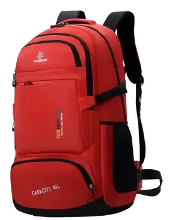
HK-5022
Luaran & denai · logo, warna & saiz khas
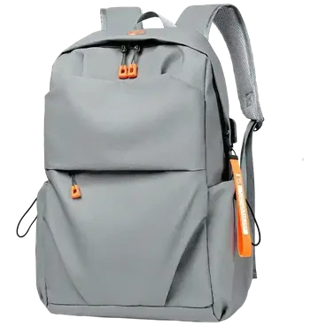
SC-3012
Ergonomik untuk kanak-kanak · logo, warna & saiz khas
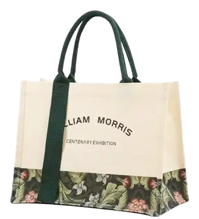
TB-2052
Bawa setiap hari · logo, warna & saiz khas

DF-9082
Perjalanan & gim · logo, warna & saiz khas

WB-6011
Sukan & perjalanan · logo, warna & saiz khas
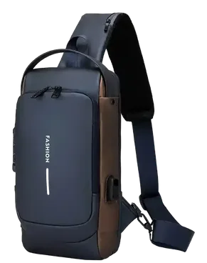
SL-7045
Bawa tanpa tangan · logo, warna & saiz khas

LT-8014
Profesional bandar · logo, warna & saiz khas
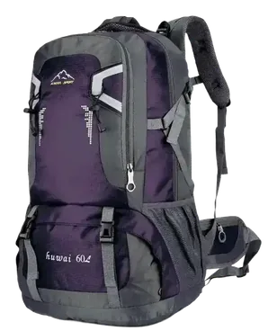
HK-5023
Luaran & denai · logo, warna & saiz khas
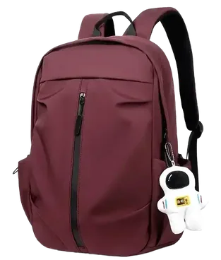
SC-3013
Ergonomik untuk kanak-kanak · logo, warna & saiz khas

TB-2053
Bawa setiap hari · logo, warna & saiz khas

DF-9083
Perjalanan & gim · logo, warna & saiz khas
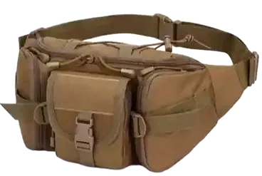
SL-7043
Sukan & perjalanan · logo, warna & saiz khas

SL-7046
Bawa tanpa tangan · logo, warna & saiz khas

LT-8015
Profesional bandar · logo, warna & saiz khas
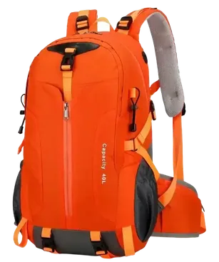
HK-5024
Luaran & denai · logo, warna & saiz khas

SC-3014
Ergonomik untuk kanak-kanak · logo, warna & saiz khas
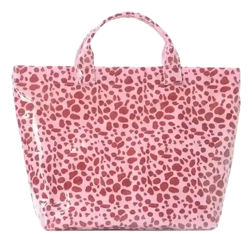
TB-2054
Bawa setiap hari · logo, warna & saiz khas

DF-9084
Perjalanan & gim · logo, warna & saiz khas
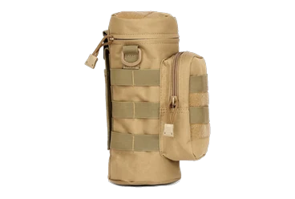
WB-6012
Sukan & perjalanan · logo, warna & saiz khas

SL-7044
Bawa tanpa tangan · logo, warna & saiz khas

LT-8016
Profesional bandar · logo, warna & saiz khas
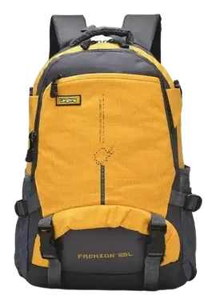
HK-5025
Luaran & denai · logo, warna & saiz khas

SC-3015
Ergonomik untuk kanak-kanak · logo, warna & saiz khas

TB-2055
Bawa setiap hari · logo, warna & saiz khas
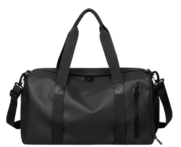
DF-9085
Perjalanan & gim · logo, warna & saiz khas

WB-6013
Sukan & perjalanan · logo, warna & saiz khas
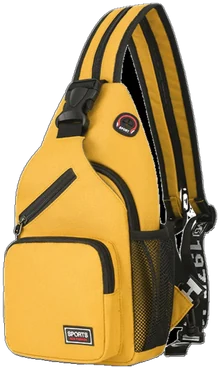
SL-7045
Bawa tanpa tangan · logo, warna & saiz khas


 FN 01
FN 01 CL 01
CL 01 FN 02
FN 02 CL 02
CL 02 PK 02
PK 02 MT 03
MT 03 FN 03
FN 03 CL 03
CL 03 PK 03
PK 03 FN 04
FN 04 CL 04
CL 04 PK 04
PK 04 MT 05
MT 05 MT 06
MT 06 FN 06
FN 06 MT 07
MT 07 FN 07
FN 07 CL 07
CL 07 MT 08
MT 08 CL 08
CL 08 MT 09
MT 09 FN 09
FN 09 CL 09
CL 09 MT 10
MT 10 FN 11
FN 11 CL 11
CL 11 PK 11
PK 11 FN 12
FN 12 CL 12
CL 12 PK 12
PK 12